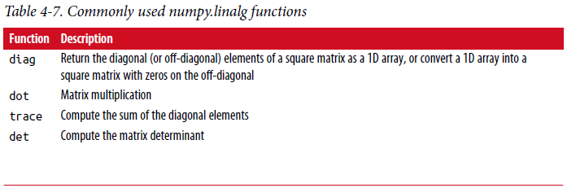
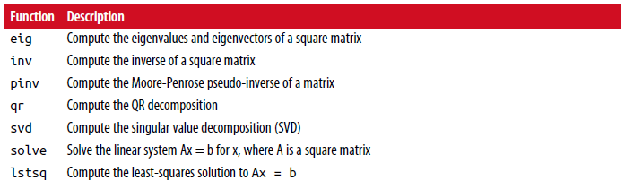

4.5 线性代数¶
线性代数像矩阵乘法、分解(decompositions)、行列式(determinants)和其它方阵(square matrix)数学运算是任何数组库的重要组成部分。 不像一些其它语言如MATLAB，两个二维数组用*相乘是逐元素乘积(element-wise product)而不是矩阵点积(dot product)。 因此，对于矩阵乘法有一个dot函数，一个数组方法和一个函数都在numpy名字空间中:
In [223]: x = np.array([[1., 2., 3.], [4., 5., 6.]])
In [224]: y = np.array([[6., 23.], [-1, 7], [8, 9]])
In [225]: x
Out[225]:
array([[ 1., 2., 3.],
[ 4., 5., 6.]])
In [226]: y
Out[226]:
array([[ 6., 23.],
[ -1., 7.],
[ 8., 9.]])
In [227]: x.dot(y)
Out[227]:
array([[ 28., 64.],
[ 67., 181.]])
x.dot(y)与np.dot(x, y)效果相同::
In [228]: np.dot(x, y)
Out[228]:
array([[ 28., 64.],
[ 67., 181.]])
二维数组和适当大小的一维阵列之间的矩阵乘积(product)产生一维数组:
In [229]: np.dot(x, np.ones(3))
Out[229]: array([ 6., 15.])
@符号（从Python 3.5开始(as of Python 3.5)）也可以作为执行矩阵的中缀(**infix**)运算符乘法(multiplication)::
In [230]: x @ np.ones(3)
Out[230]: array([ 6., 15.])
numpy.linalg有一个标准矩阵分解、求逆和行列式集合。 这些是通过相同的行业标准引擎下实现的线性代数库，这个库也用于其他语言如MATLAB和R。这样的库如BLAS，LAPACK或可能（取决于您的NumPy版本）专有的英特尔MKL（数学核心库）:
In [231]: from numpy.linalg import inv, qr
In [232]: X = np.random.randn(5, 5)
In [233]: mat = X.T.dot(X)
In [234]: inv(mat)
Out[234]:
array([[ 933.1189, 871.8258, -1417.6902, -1460.4005, 1782.1391],
[ 871.8258, 815.3929, -1325.9965, -1365.9242, 1666.9347],
[-1417.6902, -1325.9965, 2158.4424, 2222.0191, -2711.6822],
[-1460.4005, -1365.9242, 2222.0191, 2289.0575, -2793.422 ],
[ 1782.1391, 1666.9347, -2711.6822, -2793.422 , 3409.5128]])
In [235]: mat.dot(inv(mat))
Out[235]:
array([[ 1., 0., -0., -0., -0.],
[-0., 1., 0., 0., 0.],
[ 0., 0., 1., 0., 0.],
[-0., 0., 0., 1., -0.],
[-0., 0., 0., 0., 1.]])
In [236]: q, r = qr(mat)
In [237]: r
Out[237]:
array([[-1.6914, 4.38 , 0.1757, 0.4075, -0.7838],
[ 0. , -2.6436, 0.1939, -3.072 , -1.0702],
[ 0. , 0. , -0.8138, 1.5414, 0.6155],
[ 0. , 0. , 0. , -2.6445, -2.1669],
[ 0. , 0. , 0. , 0. , 0.0002]])
表达式X.T.dot(X)计算x和它的转置x.T的点积。 见表4-7 一些最常用的线性代数函数清单。
 {kind=link}
{kind=link}